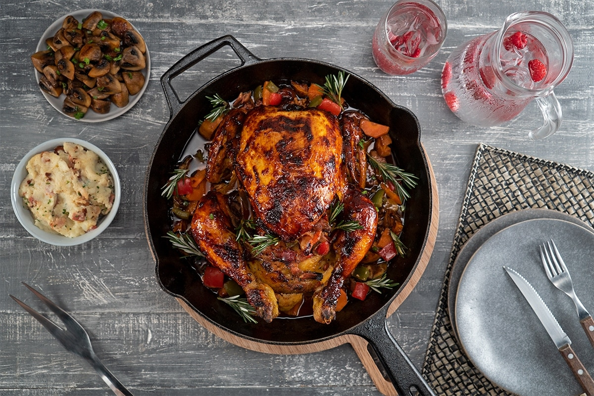

Pescado Adobado

Ingredientes:
| Ingrediente |
Cantidad |
| Aceite de Ajonjoli |
3 cucharadas |
| Cebolla |
1 Taza |
| Ajo |
2 cucharadas |
| Zanahoria |
1 Taza |
| Pimiento rojo |
1 Taza |
| Pimiento verde |
1 Taza |
| Tocino |
2 Tazas |
| Pimienta |
Al gusto |
Preparación:
♦ Para el relleno, en un sartén amplio calienta el aceite de ajonjolí. Fríe ahí la cebolla, el ajo, la zanahoria, el pimiento morrón rojo, el pimiento morrón verde y el tocino, sin dejar de mover por 3 minutos, o hasta que los ingredientes comiencen a tener un tono dorado; sazona con pimienta y paprika. Vierte Teriyaki salsa de soya para glasear Kikkoman® y mueve hasta incorporar. Añade el jugo de limón y cocina por 2 minutos más. Retira del fuego y deja enfriar.
♦ Precalienta el horno a 220 °C.
♦ Para el glaseado, en un recipiente amplio mezcla la mantequilla derretida con la paprika, la pimienta negra, la mejorana, el orégano y Teriyaki salsa de soya para glasear Kikkoman®, mueve hasta integrar todos los ingredientes. Reserva.
♦ En una charola profunda y engrasada con aceite de ajonjolí, coloca las cabezas de ajo y el camote; procura cubrir toda la superficie de la charola. Acomoda el pollo y rellena con la mezcla de verduras, amarra el pollo con ayuda de un hilo de algodón y barnízalo con la mezcla del glaseado (reserva un poco para volver a barnizar después). Tapa con aluminio y cocina por 60 minutos, a 220 °C.
♦ Después de que hayan pasado 20 minutos, retira el pollo del horno para barnizar nuevamente con la mezcla y regresa a hornear por 15 minutos, pero baja la temperatura a 180 °C, para rostizar la piel completamente.
♦ Sirve acompañado de puré de papa y verduras salteadas.
♦